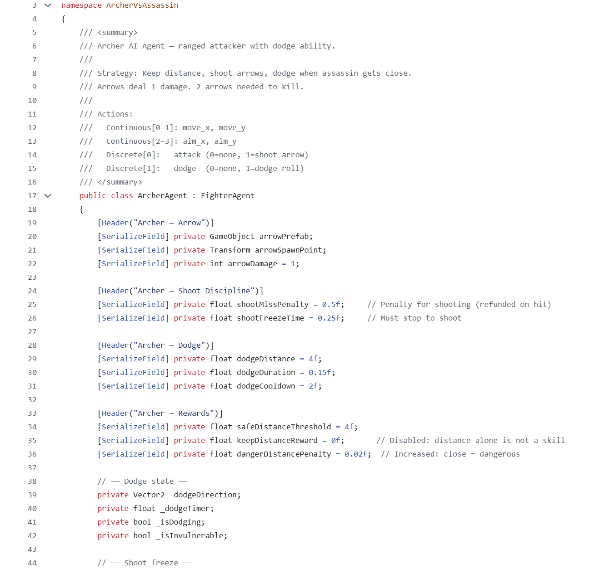
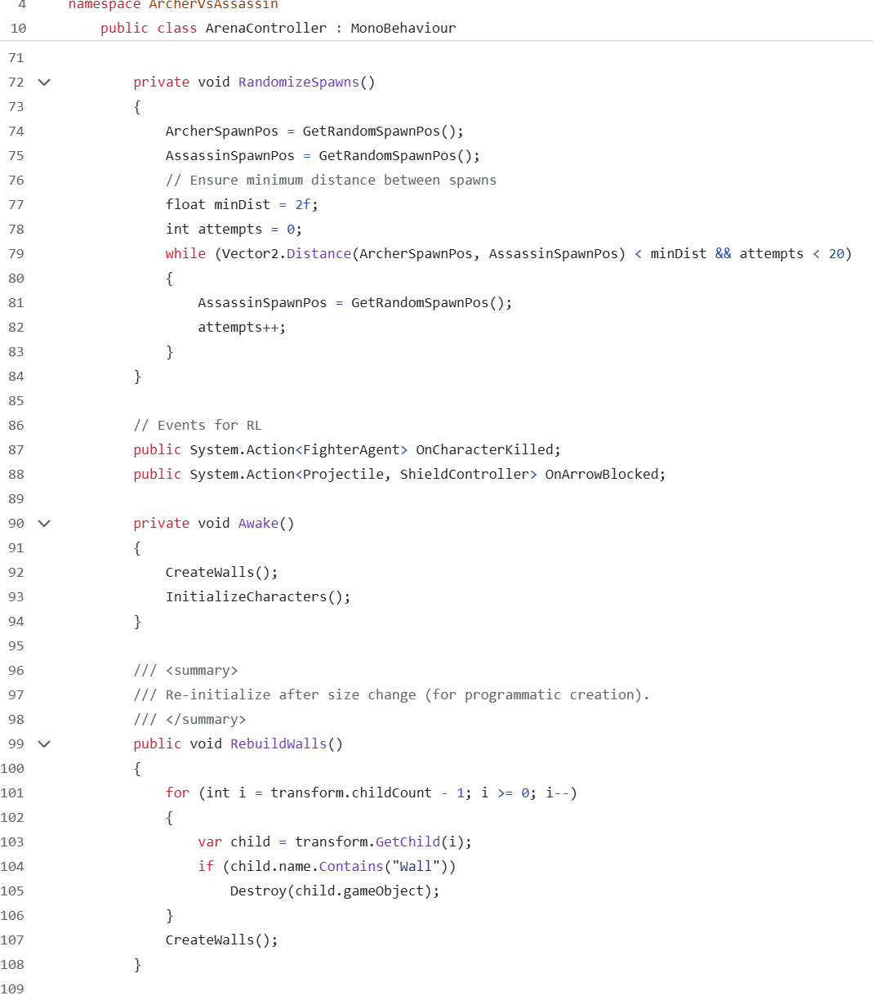

Archer vs Assassin — AI Battle
A Unity experiment where AI units learn to fight each other

I've been fascinated by watching NPCs in video games ever since I was a child. Attending the Youth AI Camp inspired me to build my own self-playing simulation, Archer vs. Assassin, in Unity.
In a 120×80 arena, 100 AI units (50 Archers and 50 Assassins) compete using custom neural networks trained via a genetic algorithm. Each generation, top-performing "brains" are cloned and mutated to optimize movement, targeting, and resource management.
Some of the code


Expectation vs. Reality
I originally hoped the AI would spontaneously invent novel group tactics. However, the units mostly fight alone rather than true tactical teamwork. While they didn't discover groundbreaking strategies, identifying this limitation helped me understand the boundaries of my current neural network design and fueled my drive to explore deeper reinforcement learning architectures.